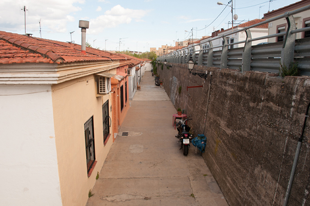

Can Paguera
La comisión de Hábitat Urbano y Medio Ambiente aprobó inicialmente la semana pasada la desafectación de esta barriada del distrito de Nou Barris. Obtuvo la unanimidad de todos los grupos. Las 673 viviendas unifamiliares estaban calificadas por el PGM como «zona de remodelación pública», eufemismo que escondía que las casitas de planta baja, algunas de ellas con jardín o patio, estaban condenadas a ir al suelo.
El presidente de los vecinos de Can Peguera, Josep Ortiz, recuerda que se constituyeron en asociación, separándose de la del Turó de la Peira, al constatar que estaban afectados por el plan general y que su futuro era incierto. Barrio de familias con pocos recursos, la vida tranquila, como si de un pueblo se tratara, les compensaba de las estrecheces de unas casas de entre 43 y 60 metros cuadrados. Desde entonces, la lucha se ha concentrado en dignificar las condiciones de vida de sus habitantes. Y así han pasado 40 años.
